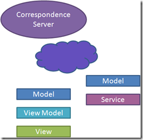

Take a look at this architecture diagram. Ask yourself where the domain knowledge resides.
Take a look at this architecture diagram. Ask yourself where the domain knowledge resides.
The view is obviously domain-specific. Even a web application running in a general-purpose browser is still a hand-crafted tree of HTML documents. Somebody put effort into the view with specific knowledge of the problem domain.
The model is obviously domain-specific. By today’s best practices, that’s where most of your domain logic lives. But that’s not where it stays. It leaks forward into the view model, and backward into the service agent.
The API is domain-specific. It contains service methods, document types, or REST resources with names from the problem domain. If you were to build a different system, you would have to build a completely different API.
The logic layer is domain-specific. This layer hosts all of the services that the client calls. Most of these services are simple CRUD operations that pass through to the database. But a few add value to the data. In either case, these service functions are only useful within a specific problem domain.
The database is often domain-specific. Relational databases understand the schema of the data that they store, which is how they can execute complex ad-hoc queries over that data. But some databases – particularly the document-oriented NoSQL databases – are schemaless. Since they aren’t given any domain knowledge, they can be used for any problem domain.
Domain knowledge has infiltrated almost every layer of the architecture. The only layers that are spared are the data access layer (e.g. Hibernate, Entity Framework) and perhaps the database (e.g. MongoDB, CouchDB).
Every other layer we must write ourselves. We must write it anew for every application we build. We must redeploy it each time we add even a single feature to an application.
A typical deployment scenario
Suppose you have an application in production. You want to add a new feature to that application. What do you have to do?
Unless it’s trivial, that feature is going to record a new piece of data. That means that we will need to modify the schema to add a column, or perhaps a table. We have to be careful not to change or delete any existing columns, as that will complicate deployment. That change will be scripted and deployed to the database.
To expose that feature, we need to add logic and a new API call. We have to be careful how we modify any existing APIs so that they are backward compatible. That change will be built and deployed to the servers. It must be deployed after the database script is run.
Third, we need to avail our users of the new feature. The service agent must be regenerated, and the new data added to the model. We then modify the view and view model to present that new functionality. If this is a web application, these components are deployed with the server: they are the generated HTML and attached JavaScript files. If this is a client application, then we make a new MSI available for download.
All of these steps must be completed in three different environments. The development environment is updated so frequently that we need an automated build. QA is updated less frequently, but still more than once for a new release. Production is updated infrequently, and with the greatest of care.
Every one of these versioning and deployment tasks costs money. So far, that cost has just been accepted as the price of doing business. That’s about to change.
Correspondence
 Correspondence changes the architectural diagram. It eliminates many of the layers. Most importantly, it removes domain knowledge from the server.
Correspondence changes the architectural diagram. It eliminates many of the layers. Most importantly, it removes domain knowledge from the server.
Correspondence is an application-agnostic synchronization engine. You download the open-source client libraries and tools, and express your model in a language called Factual. You then point your client at a correspondence server. A free server is provided for development and testing. More robust servers will be available soon for production scenarios.
While Correspondence can be used for web applications, it is best suited for rich clients (WPF or Windows Phone 7 currently). Clients use a publish/subscribe mechanism for sharing data with one another through a common Correspondence server.
A Correspondence rich-client deployment scenario is simpler than the server-based alternative. To add a feature, you first modify the Factual model. Like before, you have to be careful to retain backward compatibility. Then you expose that feature through the view model and the view. With that, you are done. No database scripts. No API changes.
Developers can test their changes without redeploying a development server. They will work either against a local Correspondence server, or one shared by the development team. But none of their changes are deployed to the server. While automated builds are still a good thing, they are not necessary for testing changes in development.
QA will have its own Correspondence server. Again, no part of the application is deployed to this server. This means that testers can pick up builds and start testing independently, even if other members of the team are testing earlier builds.
Production deployments are just client updates. In Windows Phone 7, this is pushed through the Marketplace. For a desktop solution, automatic updates, MSI downloads, and ClickOnce are all viable options. No software or database changes need to be deployed to a production server.
Services
 Correspondence eliminates the need for CRUD operations on the server. But what if you have server-side logic? What if you have work that can’t be done on the client? Then you need to write a service.
A Correspondence service is nothing more than a faceless client. It doesn’t run on the client device, but it is still a client of the Correspondence Server. It uses the same Factual model as the client. It uses the same publish/subscribe mechanism to exchange data with other clients. Services can even be joined together in a service bus configuration.
Services change the deployment story; you need to deploy them to a server. These services may integrate with a relational database to provide reporting. If so, then you will again need to deploy database changes. But these services no longer sit between the client and the database. As a result, they can be deployed independently. They don’t even need to be deployed to machines accessible by the client.
Web applications
 While Correspondence is best suited to rich-client applications, it can be used for web apps as well. Most likely, you will have a web interface for infrequent visitors, and a rich-client interface for regular users.
While Correspondence is best suited to rich-client applications, it can be used for web apps as well. Most likely, you will have a web interface for infrequent visitors, and a rich-client interface for regular users.
The web application will use the Factual model to query and record its data. Then it will generate the same kind of HTML experience that we are used to. If a richer AJAX interface is still desired, then the additional API and service agent layers can be added. You must weigh the benefits of these layers against the extra development and deployment costs they impose.
A web application backed by Correspondence gains the same benefits as one using a NoSQL database. Since the data layer is schemaless, no database changes need to be deployed. If all users access your application through the web, then there is little extra benefit that Correspondence can offer. But if you want to augment the web experience with a rich-client experience, then Correspondence has a place.
In a layered client/server architecture, domain knowledge resides at almost every layer. That domain knowledge costs us development time and deployment risk. Application-agnostic integration servers like Correspondence remove domain knowledge from many server-side components, making it easier to build, test, and deploy solutions.


{kind=link}
{kind=link}
{kind=link}